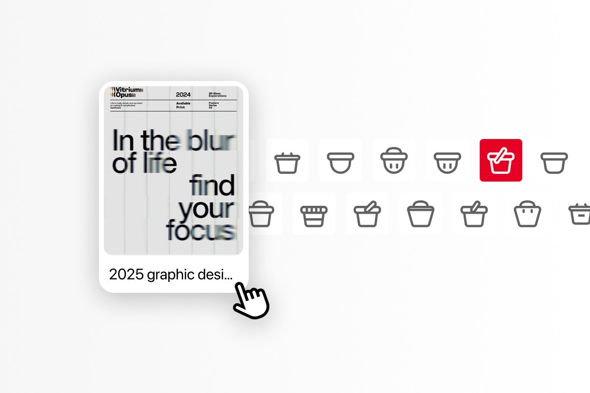
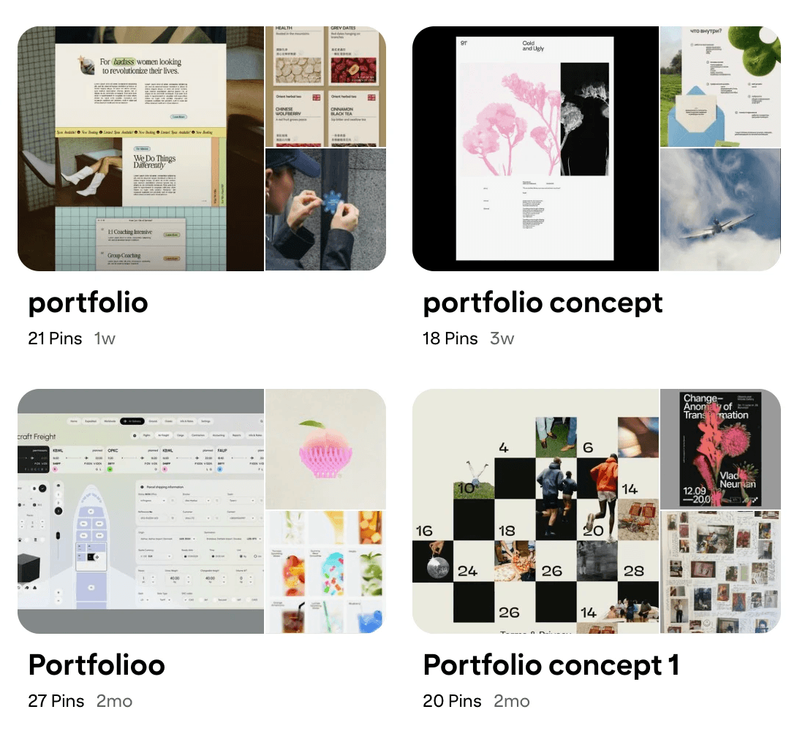
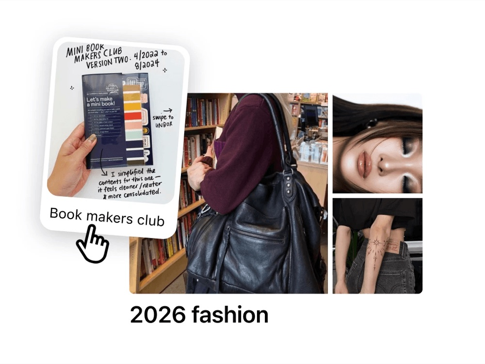
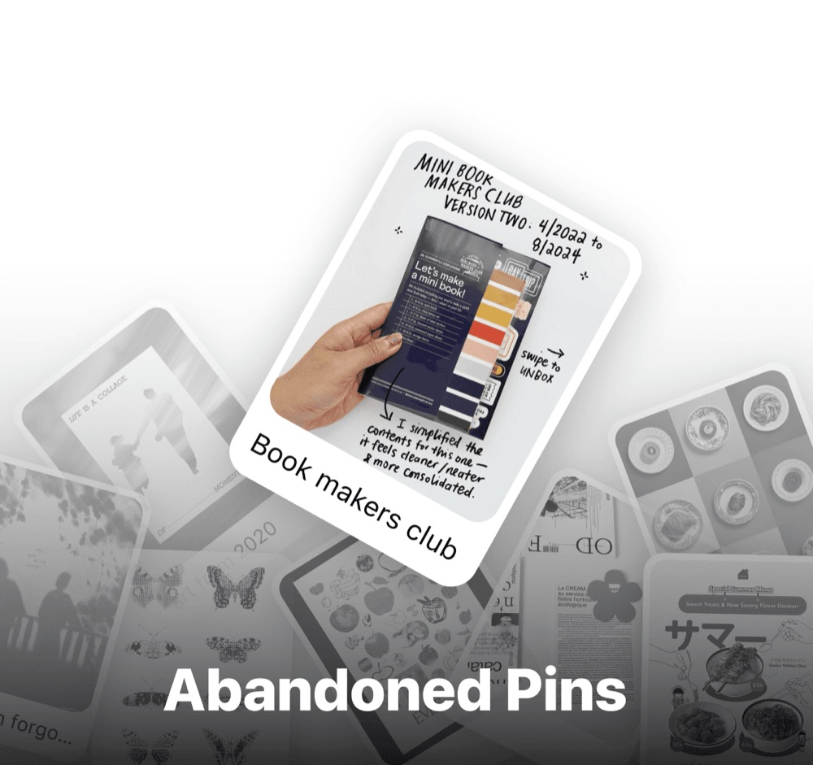
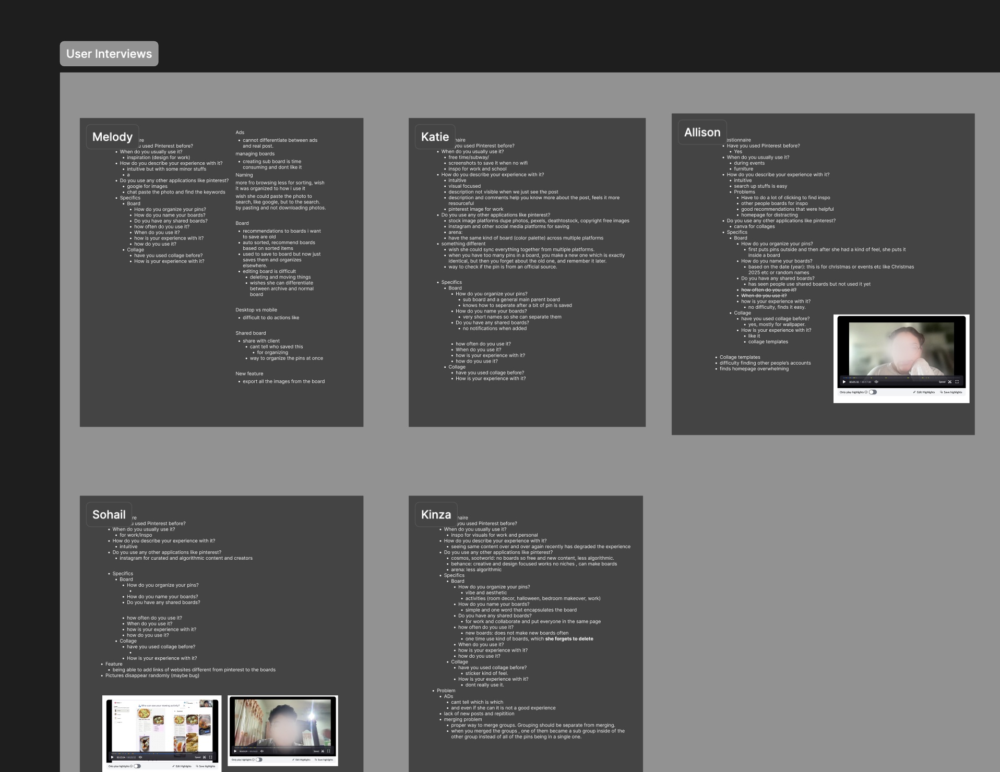
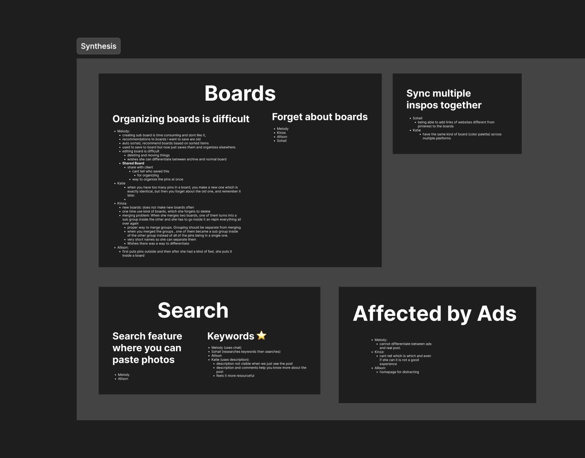
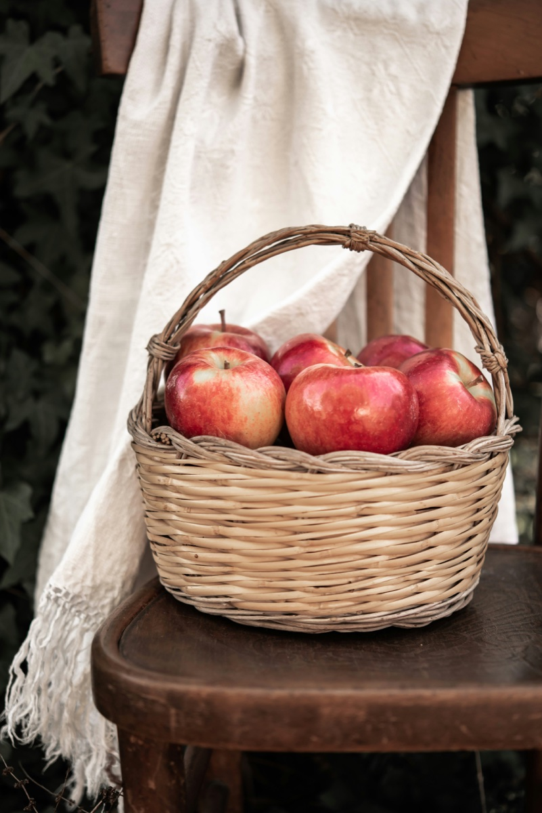

Case Study — Product Design
Pinterest Basket: Designing for how people actually think
Pinterest lets you save to a board. Baskets lets you save before you know which one.
Overview
What is Basket?
Pinterest is where people collect inspiration. Boards are how they organize it.
Basket is the step in between. A low-pressure space where users can drop pins they are interested in, organize them manually, or let AI sort them when they are ready.
When I presented Basket at Parsons, 90% of the people I spoke to said they would use it.
This is a speculative project — part of a studio class at Parsons School of Design. I was the lead designer, owning end-to-end process from in-person user research and ideation all the way to an interactive prototype for the Baskets feature in Pinterest.

Problem
Imagine you have 40 boards, you see a pin you like, and now have to add it to one of the boards.
This led to problems like…

Multiple boards, same name Near-identical boards make it hard to tell which one is actually the right one.

Pin to a random board Probably never to return, since nothing ties it back to what it was for.

Abandon the pin Altogether, rather than deal with deciding where it belongs.
The difference is between how we think and how Pinterest's pin-to-board flow is architectured.


So the goal became to design for how people actually think: non-linear, intuitive, & often unfinished.
Research
Every participant said organizing boards was hard.
I interviewed five Pinterest users: two who use it professionally, two advanced users who pin for pleasure, and one seasonal user. I asked how they save, name, and organize their pins, then synthesized their answers into shared themes.
- Organizing boards is difficult. All five struggled with it — making sub-boards felt slow, duplicate boards piled up, and old boards were forgotten.
- The features they wanted already existed. Many of the fixes they wished for were already in Pinterest; they just didn't know about them.
- Ads get in the way. Everyone was bothered by ads, and some couldn't tell an ad from a real pin.


Ideation
I came in with five ideas. Users made the call.
The process started with open exploration across three key questions:
- How can I make the organizing experience more efficient?
- How do people naturally categorize information, and how can the design reflect that?
- How do other applications organize data and files in a way that feels manageable?
With that I curated five concepts and tested them with users.
After testing the ideas with users, almost all the users liked the idea of Baskets.
Design
Here is why Basket works for how users actually think.
- Non-linear. Basket acts as an in-between step between discovery and organizing. Before, users had to pin their inspirations to boards on the spot, which created extra cognitive load every time they found an inspiration. Rather than forcing immediate structure, Basket embraces ambiguity — it lets users gather freely, then step back and make sense of what they've collected.
- Intuitive. Like collecting apples, you drag and drop pins to the basket. Humans collect things before making sense of them. Basket goes back to the natural way people collect things: dump everything in one place, then make sense of it later. With an aim to keep that tactile feel, Basket lets users drag and drop items into it and allows them to sort through them later.

- Unfinished. Basket's AI helps you organize your unfinished boards while still being in control. Basket integrates AI in a way that feels assistive, not directive — it suggests relevant boards based on patterns in saved pins, or creates new ones when needed. This stops you from creating a new board every time you can't find the one you were looking for, and fixes the problem of multiple boards having the same name. But most importantly, using AI is optional — users can always organize everything manually, maintaining full control over where their inspirations end up.
Basket turns a rigid action into a fluid workflow, making curation feel less like sorting and more like discovering intent over time.
Impact
90% of participants said they would use Basket.
This project was presented in front of 20+ people and was recognized as something they would definitely use and be benefited by. The feature was also shown to the interview participants later, and all of them had positive feedback about it.
Quotes from users
- “I really like the ability to just add things to a basket without categorizing them right away. This eliminates the user error of adding pins to the wrong board.” — Hannah Farnham, Digital Designer @ Zero Studios
- “I like how physical and tactile the drag and drop action feels and matches how I think when saving anything.” — Workshop Attendee
- “I loved the concept of the feature you added for Pinterest, and I feel like it would help a lot of new users navigate the functionality without being overly concerned on where everything is.” — Sophia Bae, Parsons MPS Student
90%
of participants said they would use Basket
5
concepts explored and tested with real users
20+
people saw the presentation and gave feedback